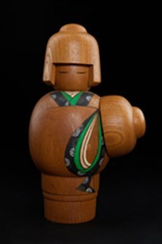

Seishin là tác phẩm thuộc dòng Kindai Kokeshi Ningyō – búp bê Kokeshi hiện đại, kết hợp giữa nghệ thuật tiện gỗ truyền thống và tư duy thiết kế đương đại. Tên gọi "Seishin" mang ý nghĩa "tĩnh tâm", thể hiện trạng thái bình yên của tâm hồn và sự cân bằng giữa con người với chính mình.
Tác phẩm được tạo hình từ gỗ nguyên khối với những đường cong mềm mại và bố cục tối giản. Điểm nhấn là phần thân tròn ôm phía trước, gợi cảm giác che chở, bao dung và sự hướng nội. Hoa văn kimono được thể hiện bằng những mảng màu xanh và đen trên nền gỗ tự nhiên, tạo nên vẻ đẹp hài hòa giữa truyền thống và hiện đại.
Trong văn hóa Nhật Bản, sự tĩnh lặng được xem là nền tảng để nuôi dưỡng trí tuệ và cảm nhận vẻ đẹp của cuộc sống. Seishin phản ánh tinh thần ấy thông qua hình thức tối giản nhưng giàu biểu cảm, mời gọi người thưởng lãm dừng lại, chiêm nghiệm và tìm thấy sự bình an trong những điều giản dị. Tác phẩm là minh chứng cho triết lý thẩm mỹ Nhật Bản, nơi vẻ đẹp không chỉ nằm ở hình thức mà còn ở cảm xúc và chiều sâu nội tâm.
静心は近代こけし人形の作品で、伝統的な木地挽きの技と現代的なデザイン感覚を融合させています。「静心」という名は心の静けさを意味し、穏やかな心の状態と、自分自身との調和を表しています。
本作は一本の木から、柔らかな曲線とシンプルな構成で造形されています。最大の特徴は前方をまるく包み込むような胴で、守り、包容、そして内省を感じさせます。着物の文様は自然の木肌の上に青と黒の色面で表され、伝統と現代が調和した美しさを生んでいます。
日本文化において静けさは、知恵を育み、人生の美しさを感じ取るための土台と考えられてきました。静心はその精神を、シンプルでありながら表情豊かな形で表現し、見る人に立ち止まり、思いを巡らせ、ささやかなものの中に安らぎを見いだすよう誘いかけます。美しさは形だけでなく感情や内面の深さにも宿る、という日本の美意識を体現した作品です。